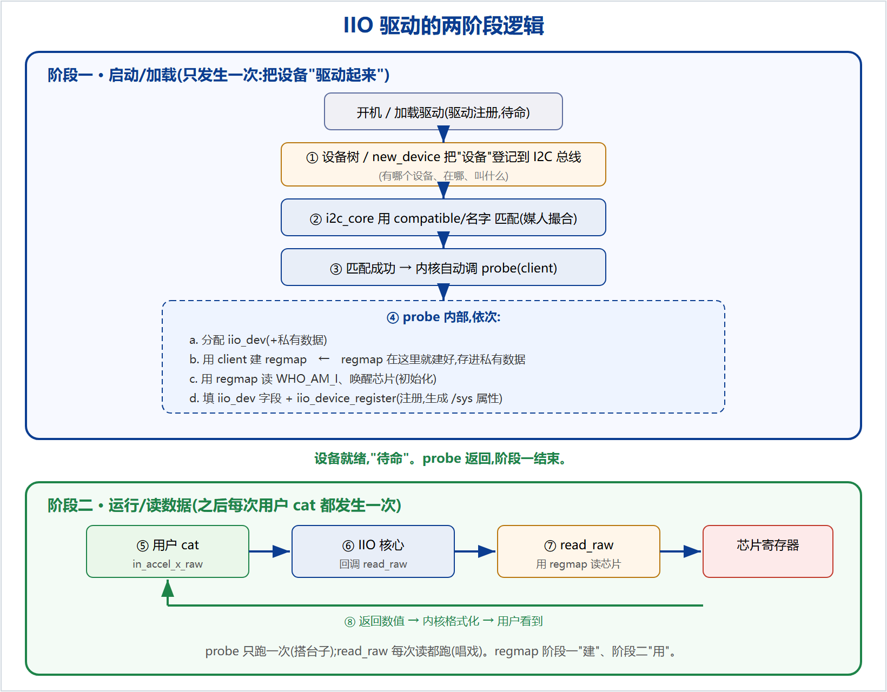
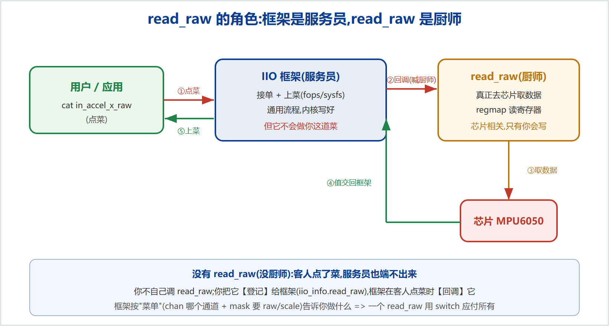

IIO 驱动不是一条直线,而是两个阶段:启动时"搭好台子"(只跑一次),之后反复"唱戏"(每次读都跑)。把这两段分开,整个逻辑就严丝合缝了。

开机 / 加载驱动(驱动 module_i2c_driver 注册,待命)
① 设备树 / new_device 把"设备"登记到 I2C 总线 ← 有哪个设备、在哪、叫什么
② i2c_core 用 compatible/名字 把设备和驱动匹配 ← 媒人撮合
③ 匹配成功 → 内核自动调 probe(client)
④ probe 内部:
a. 分配 iio_dev(+私有数据)
b. 用 client 建 regmap ← regmap 在这里就建好,存进私有数据
c. 用 regmap 读 WHO_AM_I、唤醒芯片(初始化)
d. 填 iio_dev 字段 + iio_device_register(注册,生成 /sys 属性)
设备就绪,"待命"。probe 返回,阶段一结束。
⑤ 用户 cat in_accel_x_raw ⑥ IIO 核心回调你的 read_raw ⑦ read_raw 用【阶段一建好的】regmap 读芯片寄存器 ⑧ 返回数值 → 内核格式化 → 用户看到
iio_priv 取回)。一句话:read_raw 是"真正去芯片里把数值取出来"的那个函数。框架负责接待客人,但它不会读你这颗芯片——只有你写的 read_raw 会。

iio_info.read_raw);用户一点菜,框架就回调它(控制反转)。chan(哪个通道)+ mask(要 raw 还是 scale),你照单取值写回 *val。所以一个 read_raw 用 switch 应付所有通道、所有类型。probe 里这几行:
indio_dev->name = "mpu6050"; indio_dev->modes = INDIO_DIRECT_MODE; indio_dev->info = &mpu6050_info; indio_dev->channels = mpu6050_channels; indio_dev->num_channels = ARRAY_SIZE(mpu6050_channels);
是填给 IIO 核心(框架)看的。indio_dev 是你交给框架的一张"登记表";你填字段=往表上写内容;注册那一刻(devm_iio_device_register)框架才去读这些字段(在此之前只是给内存赋值,没人看)。
| 你填的字段 | 框架读到后做什么(比喻) |
|---|---|
->name | 生成 /sys/.../name,内容就是它;标识设备。(招牌/店名) |
->modes | 记下取数方式。DIRECT_MODE=支持 sysfs 直接读;要做缓冲流式需加 INDIO_BUFFER_*。(营业方式) |
->info | 记下你的回调表地址;用户读时顺着它找到并调用 info->read_raw。(后厨联系人) |
->channels / ->num_channels | 遍历通道数组,按每个通道的 type/方向/info_mask 自动生成 sysfs 属性文件,并决定回调 read_raw 时传哪个 chan/mask。(菜单) |
你填 indio_dev 各字段(写登记表)
│
devm_iio_device_register(indio_dev) ← 把表交给 IIO 核心
├─ 按 name 建 /sys/.../name
├─ 按 channels 自动生成 in_accel_x_raw 等属性
└─ 记住 info->read_raw,等用户来读时回调它
iio_read_channel_info 调的 indio_dev->info->read_raw(... chan ... mask ...),它调的 read_raw、传的 chan,正是你在这几行里填进 ->info 和 ->channels 的东西。本文承接"read_raw 是什么"这一问的梳理。配套代码examples/learning-driver/;完整系列见docs/learning/。仓库:github.com/fyy0619-cell/xiangmu